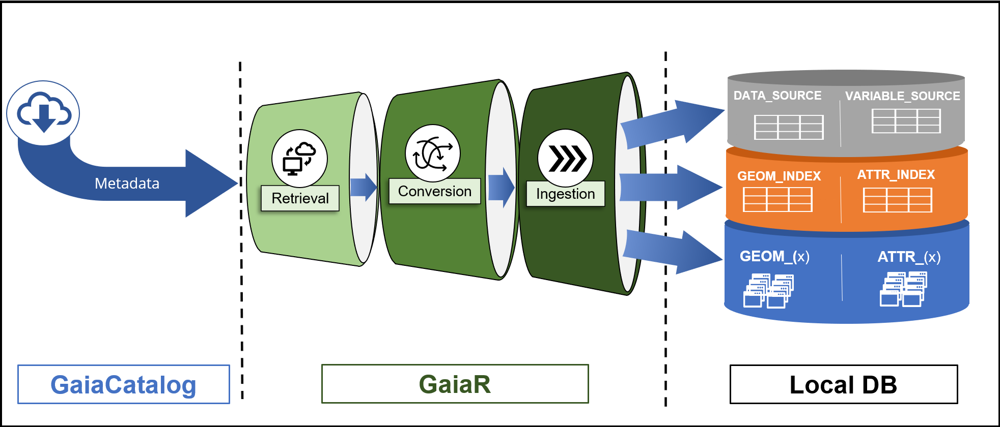
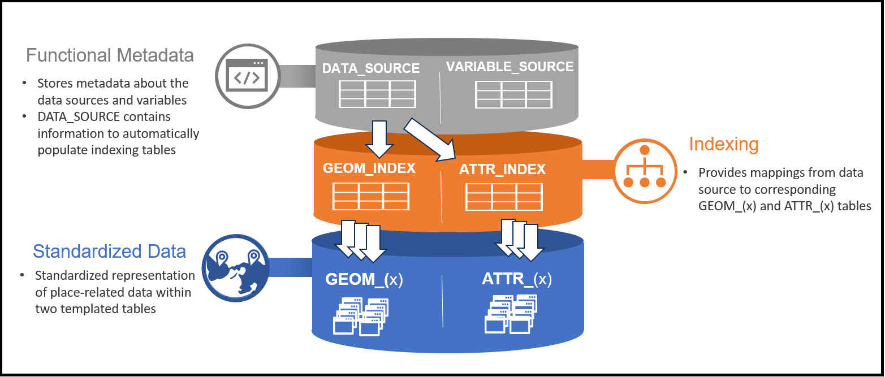
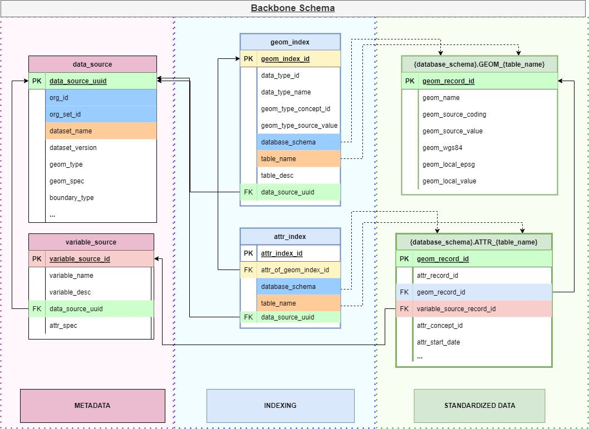
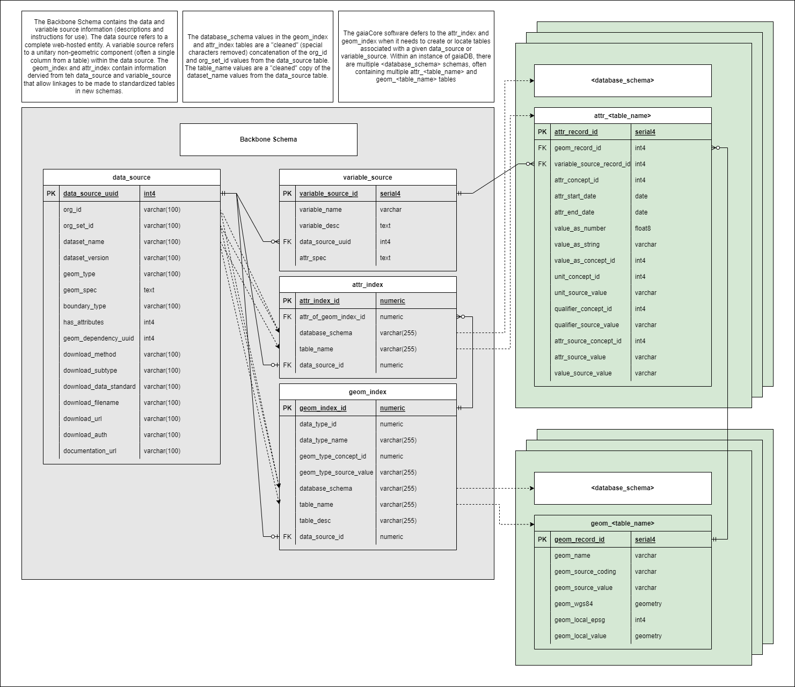
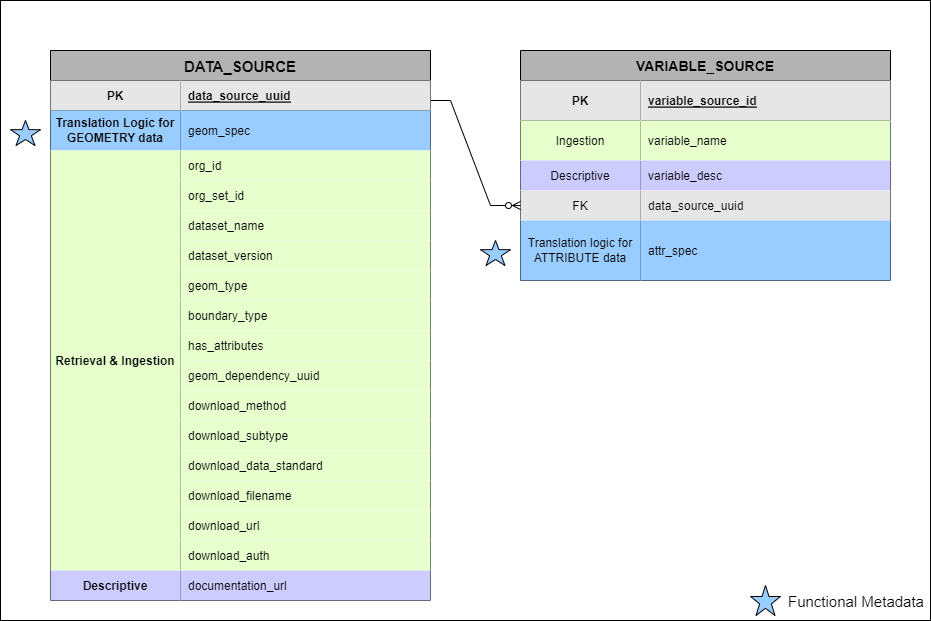
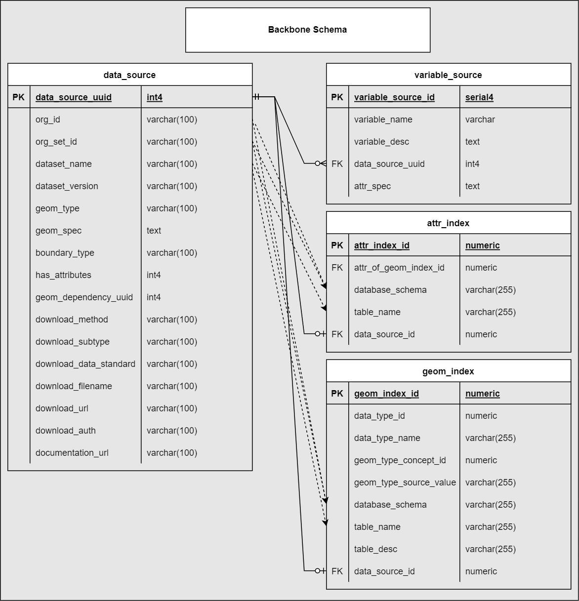

OHDSI GIS
OHDSI GIS  Gaia
Design
Gaia
Design
! UNDER CONSTRUCTION !
Preface
Use Case Simplified
To oversimplify, our goal is to create a mechanism to locally deploy a geospatial database, standardize the representation of place-related data within, and automate the process of populating data into it.
Consequently, the foundational goals of our design can be summarized as:
- Extensibility
- Tooling (via a standard data model)
- Collaborative growth
- Integration with ontologies
- Automation
- Data retrieval, standardization, ingestion
- Deployment of stack
- Efficiency
- Storage design
- Centralized functional metadata
Strategy Snapshot
| Challenge | Approach | |
|---|---|---|
| Enable extensible tooling | Implement a common data model for place-related data | |
| Establish universal representation for any place-related data | Represent data as geometries and attributes (of geometries) | |
| Create efficiency when dealing with large amount of standardized data | Split each data source into it’s own pair of geometries and attributes | |
| Create static functionality that works for any new data added | Indexing structures and parameterization to treat the collection of disparate tables as if they were functionally combined | |
| Maintain source data provenance and versioning | Data source and variable metadata, given unique identifiers, that are referenced throughout the schema | |
| Automate the processes of data retrieval, ingestion, and standardization into our common model | Create “functional metadata” at both the data source and variable level, and an R package to execute it | |
| Enable collaborative growth of functional metadata | Host the metadata centrally, instead of the actual data sources. Create separate tooling to ease burden of creating new metadata records |
Pipeline
TODO: brief description of the pipline. “GaiaR takes metadata specifications to…” etc.
 TODO: image descC
Backbone Schema
Overview
There are three distinct portions of our schema:
Data Source & Variable Metadata
- contained within DATA_SOURCE and
VARIABLE_SOURCE tables
- VARIABLE_SOURCE to DATA_SOURCE is a many-to-one relationship
- both functional and descriptive metadata
- contained within DATA_SOURCE and
VARIABLE_SOURCE tables
Indexing Tables
- Contained within GEOM_INDEX and ATTR_INDEX
- This provides the functional mapping between the data source and variable definitions to the local place-related data
- These tables are automatically populated when new data sources are added
Standardized Place-Related data
- Contained within GEOM_{x} and ATTR_{x} tables (many instances)
- All place-related data, once ingested, is represented as two tables:
- Geometries
- Attributes (of geometries)
- Each data source is ingested as it’s own unique set GEOM and ATTR tables
Schematics
Conceptual

TODO: Summarize diagram
Relation Summary

TODO: Summarize diagram
Full Schema

TODO: Summarize diagram
// TODO - 1-2 sentence intro
// TODO - Diagram
Metadata Tables
There are two tables within the ‘Metadata’ portion of our schema:

The blue stars signify functional metadata, described below
DATA_SOURCE
For a detailed description see: Specifications/Backbone/data_source
- This table contains records that catalog external (or local) web-hosted entities.
- All source data in gaiaDB must be referenced in this table
- Every record in DATA_SOURCE has it’s own UUID
- A DATA_SOURCE record is considered valid when the type of polygon is
consistent (e.g. political boundary) and it has a unique combination of
{Organization, Organization Set, Dataset Name}
- If a data source has more than one “granularity” of geometry within (albeit quite rare), we split it up into multiple DATA_SOURCE records accordingly
- This table contains descriptive and functional metadata that is
leveraged when:
- creating the indexing tables
- downloading and ingesting data sources
- translating and populating geometry-referenced data into the GEOM_{x} tables
- VARIABLE_SOURCE, GEOM_INDEX and ATTR_INDEX all must persist valid foreign keys to DATA_SOURCE, thus the creation of DATA_SOURCE is the first step of ingestion
- For a given data set, the translation logic for the geometry data is stored within the (DATA_SOURCE).geom_spec field. The attributes within a given data source are stored within VARIABLE_SOURCE and the attribute translation logic within (VARIABLE_SOURCE).attr_spec
VARIABLE_SOURCE
For a detailed description see: Specifications/Backbone/variable_source
- The VARIABLE_SOURCE table specifies the identification and translation logic for invidivual variables within a given data source.
- The relation of VARIABLE_SOURCE to DATA_SOURCE is many-to-one.
- While DATA_SOURCE contains the functional metadata for translating geometry objects (i.e. DATA_SOURCE.geom_spec), the logic for translating attributes is contained with VARIABLE_SOURCE (i.e. VARIABLE_SOURCE.attr_spec)
// TODO: Diagrams
- one (ds) to many (vs)
- example with 1 ds and many vs (svi?)
Indexing tables
There are two tables within the ‘Metadata’ portion of our schema:
- Both tables are automatically populated by metadata contained within the DATA_SOURCE table.
- These tables serve as a means to provide functional mapping to standardized place-related data contained in disparate schemas and tables, and, consequently, enables parameterized querying

Functional Metadata
TODO: purpose/use, etc.
defined structure
“recipes”
Centralized Repository
- one paragraph and a link to GaiaCatalog
geom_spec
// TODO: description
attr_spec
// TODO: description